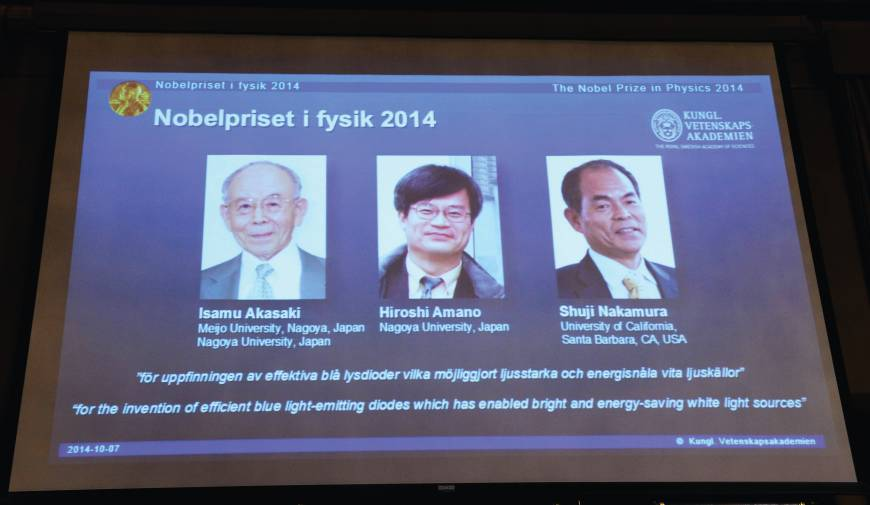
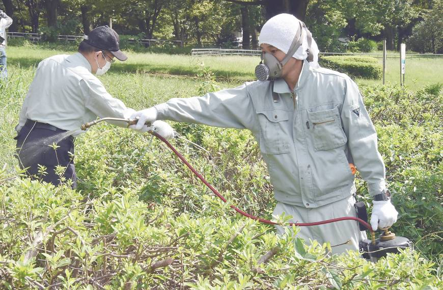

Noticias y curiosidades de Japón en el 2014
En este artículo compilo varias de las noticias y curiosidades de Japón en el 2014 que recopilé a lo largo del año. También me ayude un poco de los resultados de las tendencias de búsqueda en Google de los japoneses. Estas fueron las que más me llamaron la atención:
1. La forma perfecta de comer una hamburguesa
El programa de televisión japonés Honma Dekka!? tuvo tres investigadores expertos en mecánica de fluidos, ingeniería y odontología investigando durante 4 meses la mejor manera de sostener y comer una gran hamburguesa sin que el contenido de ésta se saliera por todos lados.

Vía kotaku
Los investigadores hicieron un escaneo 3D de una hamburguesa, tratando de averiguar cómo las partículas interactúan, mientras se sostenía una hamburguesa. Gracias a los datos, mostraron que la forma típica de sostener una hamburguesa con los pulgares en la parte inferior y los dedos en la parte superior, empuja el contenido de la hamburguesa fuera de los panes.

Vía kotaku
Entonces los investigadores realizaron numerosas pruebas con diferentes formas de como sostener una hamburguesa y encontraron una en particular que aseguran evitará derrames:

Vía kotaku
En la anterior imagen los investigadores nos muestras como debe sostenerse una hamburguesa, donde la parte derecha de la imagen es la vista desde abajo de la hamburguesa y la sección izquierda de la imagen es la vista desde arriba de la hamburguesa. Según esto, los pulgares y los meñiques deben ubicarse en la parte inferior y los otros tres dedos de cada mano se ubican en la parte superior de los panes.
Si la hamburguesa se sostiene de manera uniforme su contenido no deberá salirse fuera de la parte trasera de la hamburguesa.

Vía kotaku
Tenga en cuenta que es importante no sostener la hamburguesa demasiado fuerte, ya que si lo hace, podría causar que los panes se aplasten y el contenido se derrame. Como dato adicional, el experto dental recomienda calentar los músculos de la boca antes de comer una hamburguesa grande, abriendola y cerrandola un par de veces.
Por acá les dejo este video de como debería comerse una hamburguesa de ésta forma. Vale la pena intentarlo ¿cierto?
Via kotaku
2. Hamburguesas negras

Foto por Stephen
En septiembre de 2014 Burger King en Japón decidió lanzar por un tiempo limitado hamburguesas negras ( Kuro burgers ), una hamburguesa negra con pan y queso negros (No es photoshop!!! Es en serio, lograron el color gracias a que fueron preparados con carbón de bambú). La salsa de tomate también es negra (usaron tinta de calamar) y para acompañarlas una coca cola (que también combina con el color jeje).
Según mis investigaciones, varias de las personas que la probaron dicen que el sabor no es tan bueno como una hamburguesa normal y no la pedirían una segunda vez. Buena opción de marketing pero no tan buena para el paladar al parecer.
3. Japón abre programa de minería espacial

Foto por Masahiro
En septiembre de este año, Japón nos sorprendió con el anuncio de su programa de minería espacial. La sonda Hayabusa 2 se espera que llegue al asteroide en el 2018. Una vez la sonda aterrize con seguridad disparará una bala de su cañon y perforará la superficie rocosa del asteroide. La idea detrás del disparo es recoger material que no haya sido expuesto ni alterado por años de exposición a las diferentes formas de energía encontradas en el espacio.
Al llegar al asteroide se espera que también suelte pequeños robots que explorarán la zona. Si todo sale bien se espera que regrese para los Juegos Olímpicos de Tokyo en el 2020.
La sonda despegó a su misión de 6 años, el 3 de diciembre de 2014, un par de semanas después de que la sonda europea Rosetta aterrizara en un cometa.
Via businessinsider / bi
4. Premios nobel japoneses

Foto via Japantimes
En octubre de 2014 tres científicos japoneses, Isamu Akasaki, Hiroshi Amano y Shuji Nakamura, ganaron el Premio Nobel en física por la invención de los LEDs azules. Una nueva forma de emitir luz de manera más eficiente y amigable con el medio ambiente.
La Real Academia Sueca de las Ciencias dijo que la invención tiene 20 años “pero ya ha contribuido con la creación de luz blanca de una forma completamente diferente para el beneficio de todos.”
Los galardonados transformaron la tecnología de la información cuando lograron producir luz azul de los semiconductores en 1990, algo con lo que los científicos habían luchado por décadas, dijo el comité del Nobel.
Akasaki, de 85 años es profesor de la Universidad de Meijo y un distinguido profesor de la Universidad de Nagoya. Amano, de 54, es también un profesor de la Universidad de Nagoya, mientras que Nakamura de 60 años, es profesor de la Universidad de California, en Santa Barbara.
Via japantimes
5. Japoneses: Los mejores fans de la copa del mundo Brasil 2014

Via RT
Los japoneses son bien conocidos por su excelente manejo de basuras y por su cultura sobre limpiar los lugares donde la dejan. A los niños desde muy pequeños los enseñan a limpiar su salón de clases para enseñarles ese sentido de pertenencia con el medio ambiente.
Este aspecto de su cultura se dejó ver en el pasado mundial de fútbol de Brasil 2014 donde todas las personas quedaron sorprendidas de el grado de cultura de los japoneses al ver como al final de cada partido de los “samurai azules”, sus fans antes de irse del estadio, sacaban sus bolsas de basura y limpiaban lo que habían ensuciado.
“Es nuestra tradición, vivir sin residuos es mucho mejor,” dijo el consultor de negocios Kenji Yoshida, quien vive en Los Angeles. El y su esposa estaban entre los fans que fueron a apoyar al equipo Nippon.

Via RT
En Japón se considera apropiado que tu mismo limpies lo que hayas ensuciado en eventos públicos como conciertos, eventos deportivos y festivales. De hecho también es muy común que después de comer en un restaurante limpies la mesa y la dejes como la encontraste.
"Hemos comenzado esta tradición hace unos juegos o hace unos Mundiales atrás. Tratamos de hacer algo de limpieza para mostrar respeto al país anfitrión y, ya sabes, mostrar cómo limpiamos las cosas en Japón." dijo fanático del fútbol japonés Kei Kawai.
Via rt
6. ¿Estudio Ghibli cierra?

Via Kotaku
Después de 29 años creando filmes, y tras el retiro de uno de sus fundadores, el estudio Ghibli, ganador de un premio Oscar en 2002, decidió tomar una pausa, un pequeño break. Inicialmente se pensaba que el estudio cerraría completamente, pero luego se confirmó según palabras de Toshio Suzuki en el show de TV Jounetsu Tairiku (情熱大陸) que el estudio tomaría un leve respiro, un descanso. (shoukyuushi, que significa pausa o un descanso)
"Estamos pensando en disolver el departamento de producción y hacer un gran cambio en la visión general del Estudio Ghibli," agregó Suzuki.
"Obviamente, el retiro de Miyazaki fue bastante significativo ... después de eso, que debería hacer Ghibli?
"Con eso, seguir creando sin cesar como siempre no es imposible, pero ... ahora mismo, vamos a tomar un breve descanso y pensar en lo que viene."
Via kotaku
7. Muere el famoso actor Ken Takakura

Via theguardian
Tal vez esta noticia no haya sido conocida por muchos, pero el 4 veces ganador del premio de la academia en Japón y apodado como el “Clint Eastwood japonés", Ken Takakura, famoso por sus papeles como yakuza murió en noviembre de 2014.
Desde 1950 actuó en más de 200 películas, de las cuales participó en producciones occidentales como The Yakuza (1974) de Sydney Pollack y la película de Ridley Scott, Black Rain (1989), protagonizada por Michael Douglas y Andy Garcia.
En los 60 saltó a la fama con sus papeles de yakuza, co el estilo conocido como ninkyo eiga ( algo así como “películas de caballeros” ) en donde yakuzas rebeldes buscaban justicia para la gente del común.
"Creo que la razón de porque el público en general se identificaba con el papel que jugaba, era que estaban sorprendidos por mi postura como un hombre que inexorablemente se levanta a las injusticias absurdas", dijo Takakura a principios de este año. "No era sólo que yo sólo iba a cualquier lucha a espada, sino que mi personaje estaba dispuesto a sacrificarse a sí mismo con el fin de proteger a las personas importantes para él."
Via theguardian
8. Mamoru Samuragochi, el falso Bethoven de la era digital

Foto via aceshowbiz
Mamoru Samuragochi es un “compositor” japonés de música clásica y bandas sonoras para videojuegos de la prefectura de Hiroshima que falsamente afirmó ser totalmente sordo. A lo largo de su carrera afirmó que era sordo, por lo que la prensa extranjera lo apodaba el “Bethoven de la era digital”.
El escándalo estalló durante los Olímpicos de Invierno en Sochi cuando en una rueda de prensa Takashi Niigata, de 43 años de edad. anunciara que Samuragochi no era sordo ni compositor. Durante los últimos 18 años él había compuesto la música de Samuragochi. Además de esto, Samuragochi ni siquiera era músico y no podría ni siquiera escribir notación musical. No había divulgado confesado esto antes por amenazas de Samuragochi de suicidarse.
En Japón era bien conocido además por “su” composición llamada Symfony No. 1: Hiroshima, publicada en 2003 como un homenaje a las víctimas de la bomba atómica. Esto le valió en 2008 el premio de la ciudad de parte de la alcaldía, por sus contribuciones artísticas al espíritu de la ciudad.
Para 2011, después del terremoto, tsunami y desastre nuclear en el norte de Japón, la misma composición fue transformada en una especie de tema musical de la supervivencia nacional cuando fue utilizada en un documental producido por NHK, una emisora nacional de Japón. La película narra los encuentros de Samuragochi con los residentes de las regiones más devastadas, como él los abrazaba y les inspiraba esperanza y fuerza. (NHK ya ha retirado la película de su sitio Web, pero todavía hay clips disponibles en YouTube y el sitio de intercambio de archivos japonés, niconico.)
Un mes después de las declaraciones de Niigata, el mismo Samuragochi ofreció una rueda de prensa de 2 horas, donde se disculpo con el público por el engaño acerca del origen de sus composiciones. También desmintió a Niigata, diciendo que si sufría una leve sordera que había disminuido recientemente. Por último agregó que contrataría a un abogado para demandarlo por difamación.
Via newyorker
9. Ryutaro Nomomura, el político llorón
El político de 47 años, Ryutaro Nomomura, ex-miembro de la Asamblea de la Prefectura de Hyogo es noticia en el 2014 por haberse gastado alrededor de 3 millones de yenes en gastos de viajes desde su casa hasta las aguas termales de Kinosaki. Hizo alrededor de 200 viajes entre los cuales también viajó varias veces a Fukuoka, todo por “deberes gubernamentales”. Nomomura declaró que nada de esto fue ilegal a pesar de no tener recibos o explicaciones del porqué de sus frecuentes viajes.
Lo que más llamó atención de la noticia en medios y redes sociales fue su comportamiento y llanto en la rueda de prensa. Tal fue la viralidad de ese video que los video bloggers japoneses le sacaron un remix en youtube.
Nomomura renunció a su cargo el viernes 11 de julio de 2014.
Via japantimes
10. Shinkansen, 50 años de servicio

Foto por Luis Rodriguez
El 1 de octubre de 2014, cumplió 50 años de servicio el Shinkasen, uno de los trenes más rápidos del planeta.
Logró que los viajes entre Tokyo y Osaka ocurrieran en tiempo record a una velocidad de 210 Km/h cuando los trenes promedio en su época viajaban a 160km/h. Sentaron las bases para los TGV de Francia, los ICES de Alemania y los Pendolinos de Italia, los cuales aparecerían unos años más tarde. El record del Shinkansen por su fiabilidad y seguridad es impecable. No se han producido accidentes mortales en la red en 5 décadas de servicio.
Hoy en día la línea Shinkansen entre Tokyo y Osaka sale cada 3 minutos, transportando a 1323 pasajeros a 270 km/h. Luego de 50 años se han creado más de 10 nuevos modelos del tren y han abierto más de 14 líneas de tren a lo largo de todo el país. Para los próximos años esperan seguir creando nuevas líneas por donde pase el tren y reducir el tiempo del viaje entre Tokyo y Osaka a 67 minutos y de Tokyo a Nagoya en 40 minutos, con nueva tecnología de superconductividad que hará posible que los trenes viajen a 500km/h.
Para ver más detalles les recomiendo esta bonita línea de tiempo sobre los 50 años del Shinkansen hecha por the Japan News.
Via BBC
11. Muerte de el soldado que nunca se rindió, Hiroo Onoda

Via elpais
A sus 91 años de edad murió Hiroo Onoda, el último soldado del emperador japonés que siguió luchando por su país escondido en una selva de Filipinas 30 años después de terminada la II Guerra Mundial.
La única forma como lograron detenerlo fue llevando a la isla a su superior a cargo que 30 años antes le había dado instrucciones de nunca rendirse. Conoce más de la historia de HIroo Onoda en uno nuestros primeros artículos del año, Hiroo Onoda, el soldado que luchó 30 años.
12. Reportes científicos falsos

Imagen via theguardian
A comienzos de año, Haruko Obokata del Centro Riken de Biología del Desarrollo en Kobe había anunciado en 2 artículos publicados en una revista científica una forma aparentemente radical y nueva de crear células madre. El procedimiento prometía que podía crear varias células STAP (siglas de stimulus-triggered activation of pluripotency) que podían crecer en cualquier tipo de tejido.
Todos estos anuncios estuvieron rodeados de dudas de científicos que habían fallado en replicar su trabajo. Muchas de las críticas las recibió en sitios web científicos donde los investigadores señalaban varias discrepancias en su trabajo, incluyendo imágenes manipuladas y texto que parecía haber sido plagiado.
La creciente tormenta detrás de Obokata hizo que Riken lanzara una investigación en su trabajo. Días después, en una conferencia de prensa, el comité dijo haber encontrado evidencia de falsificación de imágenes para mejorar los resultados.
Obokata renunció a su cargo a espera de medidas disciplinarias contra ella.
Via theguardian
13. Kei nishikori, el primer hombre asiático en llegar a la final del US Open

Foto por marc
Kei Nishikori tuvo un gran año y fue noticia en el 2014 al hacer historia siendo el primer hombre asiático en llegar a la final del US Open luego de ganar en semifinales al número 1 del mundo Novav Djokovic, a Stanisla Wawrinka (número 3 del mundo) en cuartos de final y al número 5 Milos Raonicen en la 4ta ronda.
Según Google trends fue uno de los personajes más buscados en Japón.
Según nos muestran sus estadísticas en ESPN el jugador japonés tuvo un 2014 muy bueno logrando varios títulos ATP durante el año entre los cuales se cuentan:
- ATP Barcelona Open
- ATP US National Indoors Tennis Championship en Memphis
- ATP Malasyan Open
- ATP Rakuten Japan Open en Tokyo
Actualmente esta en el 5to puesto del ranking mundial de la ATP, por encima de ganadores de grand slam como Andy Murray y Marin Cilic.
14. Shinzo Abe, reelegido como Primer Ministro

Foto por bbc
Shinzo Abe fue reelegido como Primer Ministro de Japón luego de las elecciones de diciembre 14 de 2014, al igual que su partido LPD (Liberal Democratic Party) obtuvo la mayoría de curules en La Dieta. Con el soporte del partido Komeito respaldado por budistas, se lograron 325 asientos, 35 para Komeito y 290 para el LDP.
El señor Abe fue elegido como Primer Ministro en 2012 y ha tratado de revivir la economía de Japón desde entonces con sus políticas enfocadas a la economía, las que muchos llaman “Abeconomías”.
Cabe resaltar que las pasadas votaciones tuvieron una baja participación de votantes debido a apatía y a las fuertes nevadas en partes del país. El gobierno dijo 2 horas antes de que cerraran las urnas que la participación fue de apenas el 35%, porcentaje que le valió la mayoría de votos a Abe para gobernar otros 4 años más.
Los observadores dijeron que esto se debió en parte a la falta de una alternativa política real, con la oposición en desorden.
15. Primer brote de Dengue en Japón luego de 70 años

Foto via japantimes
Este año Japón luchó contra el primer caso de dengue en 70 años. La última vez que se registró un brote de dengue en Japón fue en 1945.
El tipo de mosquito, aedes albopictus, obtuvo el virus a través de personas que llegaron del extranjero, dijo el Ministerio de Salud en Japón. Se reportaron más de 100 casos en el 2014. Dicha enfermedad causa síntomas como fiebre alta y dolores en las articulaciones. El parque Yojogi en el centro de Tokyo se sospecha que fue la fuente de la mayoría de infecciones.
El brote era inminente debido al incremento de turismo y la mayor interacción de Japón con países de Latinoamérica y el sureste de Asia. Los mosquitos portadores del virus puede que no consigan sobrevivir al invierno, agrego a principios de septiembre, Masanori Kameoka, virólogo de la Universidad de Kobe.
16. Yazuru Hanyu, medalla de oro en los Olímpicos de Invierno

Foto via wikipedia
Yazuru Hanyu trajo ganó la única medalla de oro para Japón en los Olímpicos de Invierno en Sochi en la categoría de patinaje artístico de hombres.
Yazuru rompió su propio record mundial al ser el único hombre en superar la barrera de los 100 puntos en el “programa corto para hombres”. Es la segunda medalla que consigue Japón en estos Olímpicos, después de la conseguida por Shizuka Arakawa en 2006. También es el hombre más joven en haber ganado una medalla Olímpica de Invierno y el primer asiatico en ganar una de oro en la sección de hombres.
Via wikipedia
17. El Monte Ontake hace erupción

Foto via wikipedia
En Septiembre 27 de 2014 hizo erupción el monte Ontake, sepultando en ceniza a varios excursionistas a su paso y tomando la vida de 57 personas. El Monte Ontake se encuentra en la isla de Honshuu, alrededor de 100 km al noreste de Nagoya y a 200 km al suroeste de Tokyo. Es la segunda cima más alta del país, con 3067 metros de altura.
Es la primera erupción volcánica fatal desde el incidente en el monte Unzen en 1991 y la erupción volcánica más mortífera desde Torishima en 1902, donde murieron 150 personas.
No existieron terremotos que alertaran a las personas de una inminente erupción. La montaña es un atractivo turístico popular que se considera buena para escaladores novatos. El día del suceso el clima era bueno para escalar por lo que habían entre 200 a 250 excursionistas en las laderas de la montaña.
18. Después de 50 años Japón lanza nuevo avión comercial

Foto via bi
Aviación Mitsubishi anunció en octubre de 2014 el primer avión comercial japonés en 50 años. El Mitsubishi Regional Jet, o conocido como el MRJ, de 70-90 asientos está previsto que entrará en servicio en 2017. Será el primer avión de pasajeros que saldrá del país desde el YS-11 que entró en servicio en 1965.
El nuevo jet entrará en competencia con aviones ya establecidos como el Bombardier de Canadá, el Embraer de Brasil e incluso con aviones chinos construidos por COMAC.
Es la primera incursión de Mitshubishi en la aviación en décadas. Durante la 2da guerra mundial produjeron el A6M Zero fighter y el G4M Betty Bomber. Recientemente contruyeron el Air Force’s F1 Figther y licencias de construcción del americano F-15J Fighter.
Hasta ahora el MRJ tiene ganadas más de 200 ordenes de clientes como Japan Airlines, All Nippon Airways (ANA) y Skywest.
via businessinsider
19. Tifónes
Lamentablemente, los tifónes y los terremotos por lo general siempre estarán presentes en las noticias de Japón causando varios daños a su paso.
Entre los tifónes que han azotado a la isla durante el 2014 se encuentran:
| Tifón | Daños | Muertos | Desaparecidos |
|---|---|---|---|
| Halong | $ 3.88 millones usd | 12 | 0 |
| Neoguri | $ 156 millones usd | 3 | 0 |
| Vongfong | $ 58 millones usd | 9 | 2 |
| Nuri | Mínimos | Ninguno | 0 |
| Phanfone | $41.5 millones usd | 11 | 0 |
Los daños suman alrededor de $259.38 millones de dólares con un saldo de 35 muertos y 2 desaparecidos. Para saber más información sobre tifones y tormentas tropicales, checa esta información sobre temporada de tifones del 2014.
Espero haber podido cubrir la mayoría de noticias relevantes de Japón en el 2014, espero no haber sonado un poco amarillista. Como pudieron ver hay un número de noticias tanto positivas y negativas, como era de esperarse de cualquier país. Esperemos que el próximo año traiga mejores noticias para ellos y para nosotros. Feliz año nuevo para todos!
Imagen principal por Carlos Insignares
Artículos Relacionados

10 datos curiosos sobre el año nuevo en Japón

Dibujos en los billetes y monedas japonesas actuales